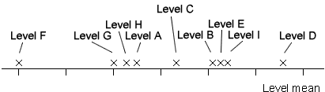

Although the problems of applying multiple hypothesis tests are often ignored, there is one situation in which there is a commonly used correction.
Factors with many levels
Consider an experiment with a single factor that has several levels. For example,

Analysis of variance may conclude that all levels do not have the same response means. We may then ask:
Which of these levels differ from each other?
Pairwise comparisons
Consider an experiment in which there are r replicates at each of the g levels (so the total number of experimental units is n = rg). To compare two specific levels, note that if the two levels are identical, there is a 95% probability that their observed level means differ by more than

where tn-g is such that 95% of the t distribution with n - g degrees of freedom is between ± tn-g. (This is based on a 95% confidence interval for the difference between the means.) We might therefore conclude that these two levels are different if their level means differ by more than this.
When there are several factor levels, the problem is that there are many different pairs of levels that can be compared in this way.
| Number of levels, g | Number of pairwise comparisons |
|---|---|
| 2 | 1 |
| 3 | 3 |
| 4 | 6 |
| 5 | 10 |
| : | : |
This introduces the problems described in the previous page. Even if all level means are identical,
If pairwise comparisons are made at the 5% significance level, there is much more than 5% probability that at least one pair of means will be significantly different.
Overall probability for several comparisons
The diagram below calculates the probability of finding at least one significant pairwise difference between the level means when each comparison has significance level 0.05 but all levels are identical.
When there are two levels, the true probability is 0.05, whatever the number of replicates at each level.
Use the slider to increase the number of levels. Observe that:
The more levels, the higher the probability of incorrectly concluding that at least one pair of levels differ.